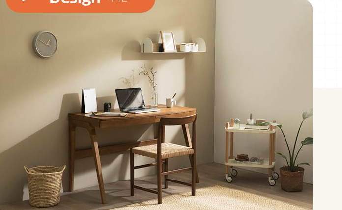

보이지 않는 곳까지, 꼼꼼하게!
Check Point
Design
디자인
Detail
디테일
Material
소재
Design
디자인

따듯한
내추럴 감성
원목의 차분하고 따듯한 감성이 스며든
내추럴 색상의 세련된 북유럽 스타일로
감각적인 공간 연출이 가능합니다.
120cm
컴팩트한 사이즈
120cm의 컴팩트한 사이즈로
작은 공간에서도 사용 가능하며,
편안하면서도 깔끔한 분위기를 낼 수 있습니다.
고급스러움을 더한
시나몬 컬러
다른 가구나 소품과도
자연스럽게 잘 어울리는 시나몬 컬러는
공간의 고급스러움을 더해 줍니다.